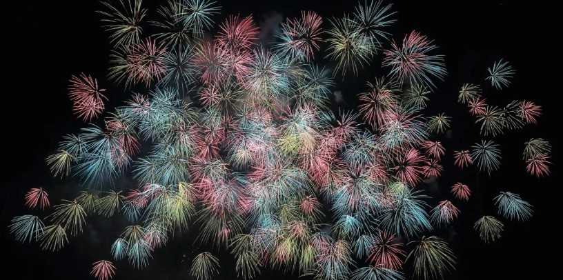

Mythology Listicle
Four Weirdest Rakshasas in Hindu Mythology

Oh, you thought Indians only have millions of Gods? Well, we have our fair share of demons too! Ancient Indian mythological pages are swarmed with such absurd and wild rakshasas that will take your imagination for a spin. Let's take a look at some of the craziest ones among them.
The next time someone tells you mythology is boring, tell them about these outlandish rakshasas mentioned below.
1. Kirtimukha — A Rakshasa That Ate Himself
Lord Shiva, also known as the destroyer God, once became extremely annoyed with a random demon named Rahu. What was his problem? He drank the nectar of immortality and beefed with the Gods. Vishnu chopped off his head, but Rahu couldn't be killed. He managed to escape, only to not learn from his errors. He then made the fatal mistake of picking a quarrel with Shiva. He gravely miscalculated and threatened Shiva on behalf of a certain king he served. Instead of doing the deed himself, Shiva created another demon, Kirtimukha, in a fit of rage to destroy Rahu.
However, Shiva, also known for his gullibility, pardoned Rahu when he asked for forgiveness. Now what to do about Kirtimukha? Shiva wondered and came up with an absurdly grotesque idea! He ordered the demon he had just created to devour itself. Yes, that happened!
Kirtimukha obliged and ate his entire body, barring the head of course. His head, known as 'Face of Glory,' is presently hung outside the temple doors to ward off evil and negative energy.
2. Putana — Krishna's Foster Mother
Krishna's childhood was pretty tough. His maternal uncle Kamsa, terrified of a prophecy that his nephew would cause his end, sent an army of demons one after another to kill baby Krishna. One of those demons was Putana, a shape-shifting woman, a tricky one to mess with. She assumed the form of a beautiful woman and approached Yashoda, Krishna's foster mother. Amazed by Putana's devotion and beauty, Yashoda allowed her to take Krishna in her lap. As she started breastfeeding Krishna with a deadly poison smeared on her breasts, Krishna squeezed her bosom so hard that she ran around in circles, screaming in pain, and died.
Despite being a notorious rakshasi, Putana is still considered Krishna's second foster mother as she had the good fortune of breastfeeding him.
3. Andhaka — The Blind Rakshasa
Andhaka was a blind rakshasa accidentally brought into existence by Shiva and Parvati. He was born from a divine combination of Shiva's sweat and Parvati's touch, when Parvati was playfully covering Shiva's eyes. To err is to be Lord Shiva!
Thus, this entity grew into a demon named Andhaka. There was a catch, though. He was born blind. Taking him to be his son of sorts, Shiva let him live. Again, to err…
Andhaka managed to impress the Creator God Brahma through his devotion. Brahma booned him with the destructive ability to create 1,000 clones every time a drop of his blood hit the land. In his megalomania, he marched towards Shiva's abode, Kailash Parvat, to kidnap Parvati, whom he considered his mother. Shiva decided not to kill him since he was kind of a son to him. Instead, he sought help from Goddess Kaali. She managed to defeat Andhaka by drinking his blood. He turned to his father for help. Shiva melted again, and made him one of his 'ganas' (disciples).
4. Bhasmasura
Had there been an award for 'dumbest rakshasa in the universe,' Bhasmasura would be a frontrunner. Yet another rakshasa brought forth into existence by the dear Lord Shiva. The obnoxious and arrogant demon was born out of bhasma (ashes) from Shiva's body. His devotion towards Shiva was quite something! Shiva, being Shiva, elated with the devotion of Bhasmasura towards him, granted him a boon to turn anybody into ashes just by putting his hand on their head. Intoxicated with the power, Bhasmasura went around wreaking havoc on innocent Earthlings.
Lord Vishnu stepped in. Respecting the fact that Bhasmasura was Shiva's doing, he decided to not kill him directly. He assumed the form of a beautiful nymph named Mohini and lured Bhasmasura into dancing. The demon became too excited to reject. He was an atrocious dancer and copied Mohini's steps. During the performance, Bhasmasura was tricked into putting his hand over his own head, and voila, he incinerated himself!
These are just four. There are dozens of others.